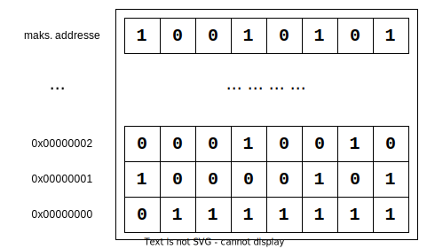

Datastrukturer
Introduksjon
Denne oppgaven er i kategorien "Tolke kode".
Formålet med denne oppgaven er å bli kjent med datastrukturer i Go. Oppgaven er basert på "A Tour of Go" (avsnitt "More types: structs, slices, and maps").
Tidsbruk og tips
3-4 timer.
Quizen vil være tilgjengelig i Canvas fredag 27. Januar 2023 10:15. Hvis du må bruke mer tid en antydet både for studier og quizen, søk hjelp.
Mer om evaluering
Husk at svarene dine som er feil, er av mye større verdi enn de som er riktig. Feil svar gir oss muligheten til å forstå hva du eventuelt har misforstått. Derfor skal vi evaluere oppgaven ved å se om du har fulgt våre anbefalinger om fremgangsmåten som beskrevet i "Tolke kode".
Tour of Go: "More types: structs, slices and maps"
I denne oppgaven skal du gå gjennom websidene 1-18 (legg merke til side nummer nederst i den venstre kolonnen på "Tour of Go" websiden) i avsnittet "More types: structs, slices and maps". I denne omgangen ser dere ikke på map.
Her er noen kommentarer for sidene i avsnittet "More types: structs, slices and maps".
Pointers
På side 1 introduseres pekere. Pekere har en sammenheng med den abstrakte modellen for det fysiske minne i datamaskinen. En meget enkel minnemodell beskriver minne som en tabell av bytes (se Figur 1). Bytes i denne konteksten er 8 bits. Avhengig av maskinvaren, er hver bit lagret i en minnecelle som består av 1-6 transistorer.

Figur 1. Veldig enkel minnemodell for datamaskinen.
Verdien til en peker er en minneadresse i minnetabellen (se Figur 1) og blir ofte fremstilt med den laveste adressen nederst. 0x00000000 i Figur 1 er representert med et heksadesimalt tall og er på 32 bits siden hvert symbol i et heksadesimalt tall, utenon Ox representerer 4 bits. Det er operativsystemet som kontrollerer det fysiske minne. Brukerprogrammer "ser" et virtuelt minne, som har et eget adresserom. De virtuelle heksadesimale adressene er av liten nytte for en programmerer av brukerprogrammer. En programmere av drivere vil ha behov for å bruke de fysiske adressene, som kan ikke aksesseres fra brukerprogrammer.
func main() {
var n int // vi kan finne verdien til n vha. av navn
var p *int // definerer en peker-variabel
p = &n // peker-variabel holder adressen til i
// forrige to linjer er ekvivalent med 'p := &n'
fmt.Println(*p) // finner verdien pekeren p peker på
fmt.Println(n) // finner i ved å bruke navn til variabelen direkte
}
Kodefragment 1. Hva er en peker i Go?
Kodefragment 1 illustrerer forskjell på en variabel av "vanlig" type, som int og en peker-variabel, som er av typen *int (typer til peker-variablene betegnes med * foran typen, dvs. generelt *T, hvor T er en standard- eller egendefinert type i Golang).
Figur 2. Eksempel fra Tour og Go illustrert.
I Figur 2 er eksemplet fra Tour of Go analysert. To variabler i og j av typen int og en variabel p av typen *int blir definert og verdiene av variablene blir endret ved hjelp av referanse (* er referanseoperatør, det motsatte av addresseringsoperatøren &). Rekkefølgen på instruksjonene er følgende:
p = &i----------- adressering*p = 21---------- referansep = &j----------- (om)adressering*p = *p / 37--- referanse
Structs
En struktur i Golang har noen likheter med klasser i Java. For eksempel i Java kan man definere en klasse slikt:
// Denne koden er i Java
public class GameBoard {
String nameOfGame;
int numberOfRows;
int numberOfColumns;
}
Kodefragment 2. Klasse i Java.
I Golang kan vi bruke struct for å gjøre noe lignende (husk at store forbokstaver er nødvendig, hvis man ønsker å aksessere datafeltene fra andre pakker; i Java brukes reserverte ord private og public for dette):
type GameBoard struct {
nameOfGame string
numberOfRows int
numberOfColumns int
}
Kodefragment 3. Struct i Go.
I Java definerer man nye typer ved hjelp av en ny klasse, mens i Golang kan nye typer defineres med hjelpeordet type. I Java kan man ikke definere egne typer basert på primitive typer som int og float, mens i Golang er det mulig (for eksempel type minInt int).
I Java en instans av en klasse skapes ved å bruke det reserverte ordet new (det forutsetter at det er implementert en såkalt constructor metode, for å kunne spesifisere verdiene til datafeltene i samme setning):
// Denne koden er i Java
GameBoard ticTacToe = new GameBoard("TicTacToe", 3, 3);
Kodefragment 4. Instans i Java.
I Golang kan man også bruke et reservert ord new, men da må man huske på at man skaper en peker, dvs.
var ticTacToe *GameBoard = new(GameBoard)
ticTacToe.nameOfGame = "TicTacToe"
...
Kodefragment 5. Instans i Go med new().
Kodefragment 5 viser også hvordan man kan aksessere datafelt i en Gostruct (likt som i tilfelle med Java instanser).
I Golang finnes det ikke noen mekanismer for constructor, men man kan bruke en syntaks som kalles for "struct literal" (fritt oversatt, kan det bety å skrive noe bokstavelig eller presist). Man kan definere instanser med ingen alle eller noen datafelt definert på følgende måter:
var (
ticTacToeVer1 = GameBoard{"TicTacToe", 3, 3}
// Her blir nameOfGame initialisert med en tom streng ""
ticTacToeVer2 = GameBoard{numberOfRows: 3, numberOfColums: 3}
// Her blir alle datafelt i struct initialisert
// med "default" verdier "", 0, 0
ticTacToeVer3 = GameBoard{}
)
Kodefragment 6. Bokstavelige instanser (en. struct literals).
Til ettertanke, så er klasseinstanser i Java egentlig pekere, men det gjenspeiles ikke i syntaksen på samme måten som i Golang. Man kan også tenke på Golang strukturer som frittstående elementer, mens i Java er klassene noe mer rigide. Man må, blant annet, definere klasser i egne filer (med mindre man bruker spesifikke mekanismer og dermed også spesifikk syntaks). I Golang kan typer og strukturer defineres løst og er ikke bundet til filer. Senere vil vi se hvordan man kan knytte strukturer til metoder (i Java skriver man metodene rett inn i "scope" til en klasse).
Man kan også definere peker til en struct ved hjelp av adressering og manipulere struct-en ved hjelp av referanser:
ticTacToeVer1 = GameBoard{"TicTacToe", 3, 3}
p := &ticTacToeVer1
*p.nameOfGame = "TTT"
Kodefragment 7. Peker til struct i Go.
Arrays og Slices
Ordet "array" finnes ikke i det norske vokabulæret. Det kan oversettes som "tabell" eller "matrise". Jeg vi bruke "array" videre i dette dokumentet, slik at det er enklere å relatere det til lesestoffet på engelsk.
Det er vanskelig å programmere med kun primitive typer (int, float, bool, byte) og definere en variabel av gangen. Andre typer for datastrukturer, som finnes i alle programmringspråk, er de såkalte kontainertyper. I kontainertyper kan man lagre diverse kolleksjoner (lister) av elementer. Det tre viktigste kontainertyper i Go er array, slice og map. Alle elementene i en kolleksjon som er lagret i en kontainertype må være av samme type. Hvert element i kontaineren kan aksesseres med en indeks eller nøkkel (en. key). For eksempel i en array var os [2]string = [2]string{"macOS", "MS Windows"} elementet "macOS" kan aksesseres med indeks 0, dvs osNavn := os[0]. Elementet kan også endres ved hjelp av indeks os[0] = "iOS".
Array i Golang defineres etter mønster [n]T, hvor n er antall elementer i array av type T. Arrays i Golang må være definert med en konstant størrelse, dvs. de kan ikke endre størrelse under utførelse av programmet. Verdiene til array kan selvsagt endres under utførelse. Hvis man ikke kjenner størrelsen på array før man skal utføre programmet, trenger man en dynamisk array og må da bruke slice ("skive" på norsk). Mønster for å definere slice er []T. Så forskjellen fra array er at ingen spesifikk størrelse for slice blir gitt ved definisjon.
Under hver slice ligger en array, som er den reelle allokeringen av minne. Man kan se på slice som en peker til et området i den underliggende array. Man kan definere en slice på flere måter:
var arr [3]int // en array med "default" verdier
sliceArr := arr[:] // fra en predefinert array
sliceEx := []int{1,2,3} // "bokstavelig" (en. slice literals)
matrise := make([][]uint8, 3) // med det reserverte ordet make
Kodefragment 8. Allokering av slice.
Man kan utvide slice med en innebygd funksjon i Go, som heter append. Funksjonen utvider en slice, hvis den underliggende array har plass. Hvis den underliggende array ikke har plass, så lages det en ny slice, som ikke lenger er knyttet til den underliggende array. Den nye slice peker på en ny underliggende array.
Figur 3. Go slices (illustrativ forklaring).
Figur 3 illustrerer viktige konsepter med slice. Man kan lage så mange slices som man ønsker over en array. Enhver endring i slice som peker på et området i array, vil også forårsake endring i den underliggende array. I Figur 3 er det vist at man kan, for eksempel, endre den 9-ende verdien i array heks fra slices sliceTall og sliceOverlapp. Legg også merke til størrelsen (eller lengde) og kapasiteten til de forskjellige slices. Kapasiteten er relatert til kapasiteten til den underliggende array. Lengden er antall elementer i slice.
Relevante Go pakker
Pakkene fra standardbiblioteket som introduseres i denne oppgaven er:
Referanser
- (A Tour of Go, 2022) A Tour of Go
- Dwen. (2022, February 15). A detailed explanation of pointers in Golang - Dev Genius. Medium; Dev Genius. https://blog.devgenius.io/a-detailed-explanation-of-pointers-in-golang-87e659d29095
- Wrigstad, T. (2018). Pointers. Wrigstad.com. http://wrigstad.com/ioopm18/pointers.html (Wrigstad, 2018)
- Understanding Type in Go. (2013). Ardanlabs.com. https://www.ardanlabs.com/blog/2013/07/understanding-type-in-go.html (Understanding Type in Go, 2013)
- Pointers in Go -Go 101. (2016). Go101.org. https://go101.org/article/pointer.html (Pointers in Go -Go 101, 2016)
- https://www.youtube.com/watch?v=Bln-v9LmZ3E (fysisk minnecelle)
- https://medium.com/@ankur_anand/a-visual-guide-to-golang-memory-allocator-from-ground-up-e132258453ed
- Arrays, Slices and Maps in Go -Go 101. (2016). Go101.org. https://go101.org/article/container.html